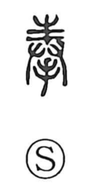

奉

Uncategorized
Kun: tatematsuru, sasageru | On: hou, bu
to offer ・ to present ・ to dedicate ・ to serve
Explanation
Shirakawa sees 奉 as a compound that joins 丰 and 收. The upper 丰 depicts a tree branch stretching outward, a bough imbued with numinous presence as a deity comes upon it. The lower 收 portrays two hands aligned, the gesture of lifting and presenting with both hands. In the ancient form, these hands support and raise the sacred bough to offer it to the gods. From this image arise the senses of reverently offering or presenting, extending further to receiving the divine will and, by attending to it, serving.